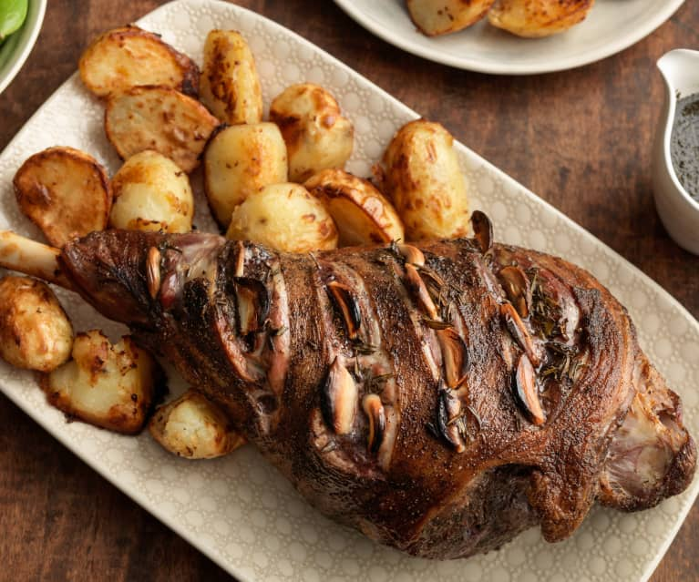

Arrosto d'Agnello con Erbe e Aglio

Description
This recipe comes from the south of Italy, where lamb is simply roasted, with garlic and wild mountain herbs.
Ingredients
- 1,5kg of lamb leg
- 2-4 spoons olive oil
- 4 garlic cloves, cut in half
- 2 branches of fresh sage
- 2 little branches of dried rosemary
- 2 bay leaves
- 2 branches of fresh thyme
- 3/4 cups dry white wine
- salt and ground black pepper
- fresh herbs for garnish
Steps
- Remove all fat excess. Spread with oil. Make small cuts in the skin and put garlic in some and herbs on the others.
- Put the rest of the herbs above the lamb and leave it in a fresh place for at least 2 hours before cooking it. Preheat the oven at 190ºC.
- Put the lamb on a big oven plate around herbs. Spread two tablespoons of olive oil above it, season it with salt and pepper. Roast it for 35 minutes, spreading its own juice above it.
- Pour the wine above the lamb. Roast it 15 minutes or until it's done. Put it on a tray that can resist the heat, tilt it and remove the fat with a spoon, you can use it for making a sauce. Cut the meat and serve it separated from the juices. Garnish with fresh herbs.